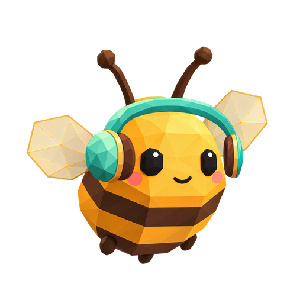
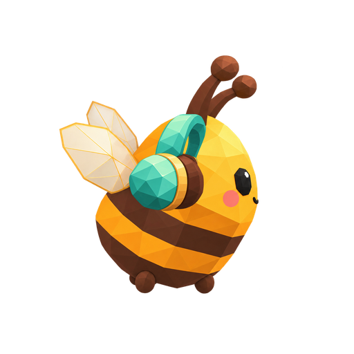
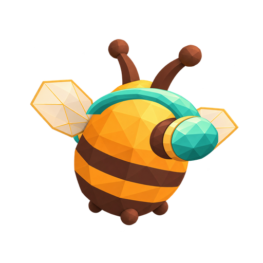
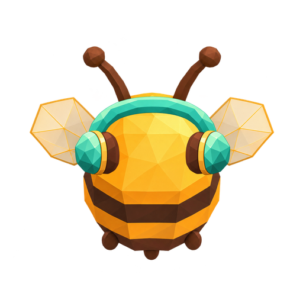
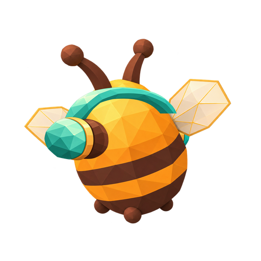
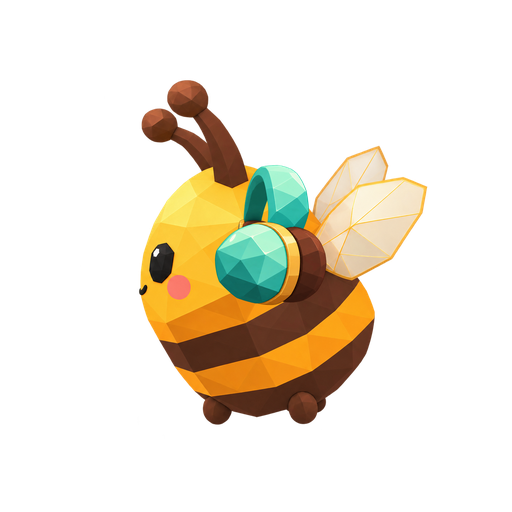
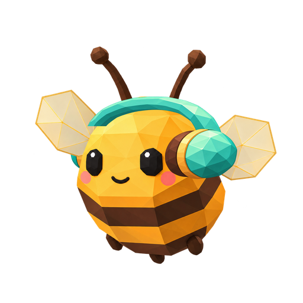

Жужа · наушники и нимб · 8 направлений
Чашки наушников расположены по бокам головы. Усики проходят внутри нимба: дальняя часть кольца скрывается за ними.
Спереди

3/4 спереди справа

Профиль справа

3/4 сзади справа

Со спины

3/4 сзади слева

Профиль слева

3/4 спереди слева
Восемь дискретных кадров. Центр корпуса выровнен при показе; это ещё прототип посадки, без взмахов крыльев и подключения к игре. На зеркальных базовых телах меняется направление света.